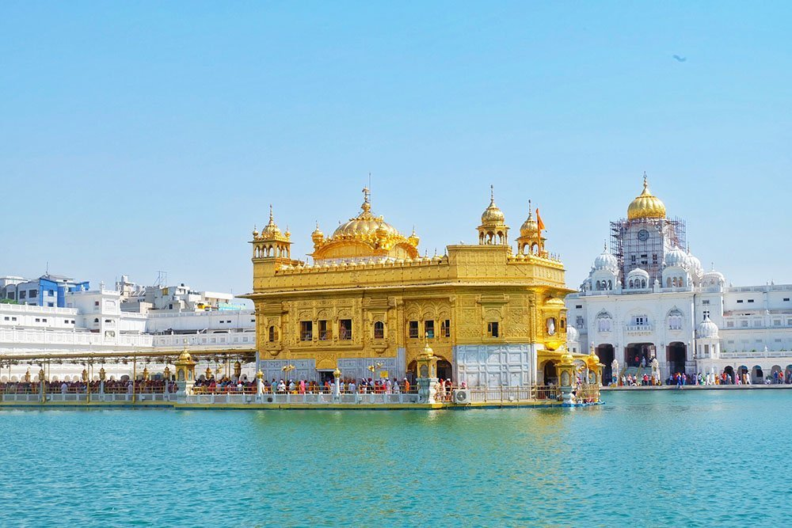
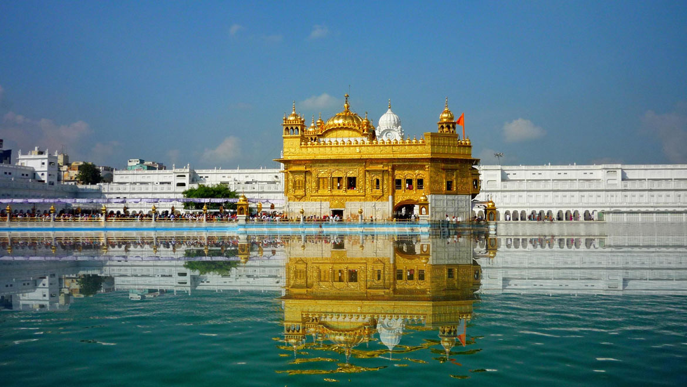
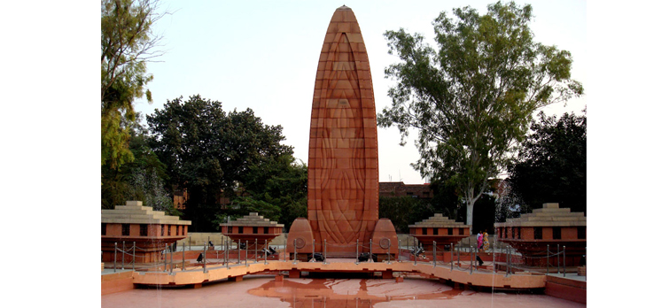
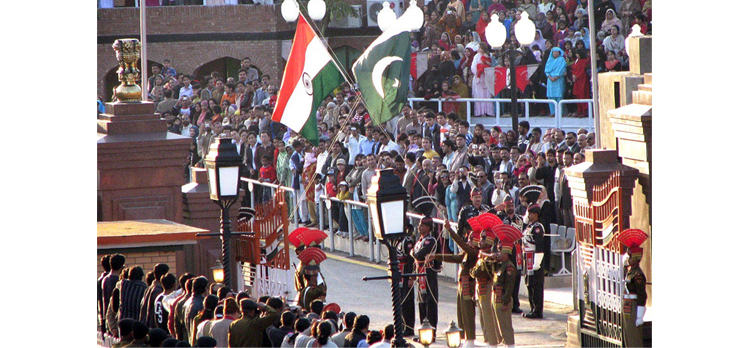
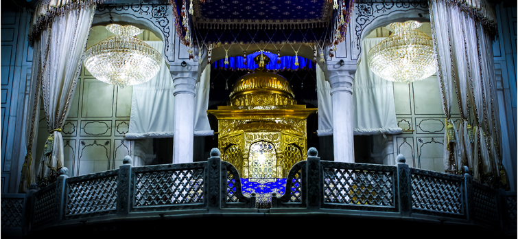
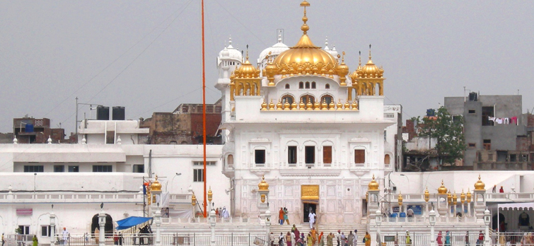
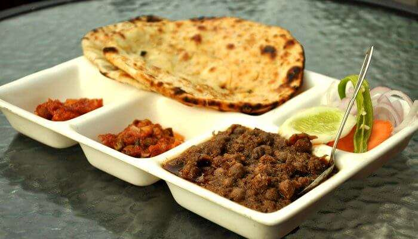
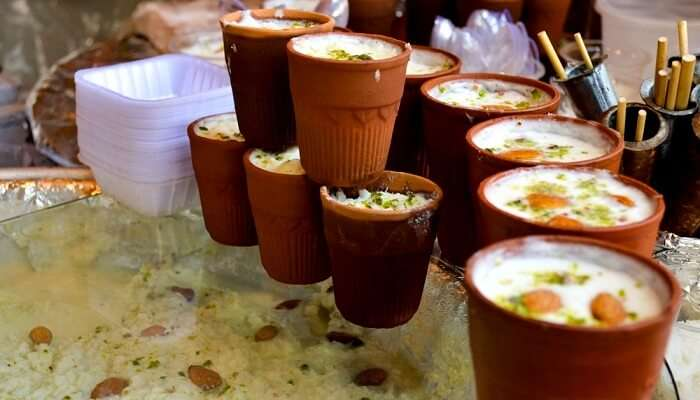

AMRITSAR
Amritsar , historically also known as Rāmdāspur and colloquially as Ambarsar, is the second largest city in the Indian state of Punjab, after Ludhiana. It is a major cultural and economic centre located in the Majha region of Punjab. The city is the administrative headquarters of the Amritsar.

Best Places to visit:-
1. Golden Temple:-

Golden Temple, the pride and soul of the Sikhs has been a centre of attraction among Indians as well as foreign travellers since ages. The golden body, mystic pond, mouth-watering halwa (desert) and overall myths make this religious site a delight of religious populace.
2. Jallianwala Bagh:-
Located within a distance of one kilometre from the Golden Temple, Jallianwala Bagh is the famous public ground where the heinous act of public massacre was done by the British Army. The incident took place on 13th April, 1919 which was the Punjabi New Year Day.
3. Wagah Border:-

Wagah Border is one of the must visit places of tourist interest around Golden Temple in Amritsar and has established itself as a firm favourite among the Indian tourists. It is the only road border crossing between India and Pakistan and located at a distance of around 30 km from the Golden Temple.
4. Akal Takht:-
>It is a Sikh temple built at the premise of the Golden Temple by Guru Hargobind Sahib as a place of justice and for resolving temporal issues. It is considered to be the highest seat of earthly authority of Khalsa.
5. Tarn Taran:-

Located at a distance of around 22 km from the Golden Temple, Tarn Taran is a Sikh pilgrimage site in the Tarn Taran District of Punjab. The Gurudwara was constructed by the fifth Sikh Guru, Arjan Dev.
Must try Dishes:-
1. Amritsari Kulcha:-

Kulcha is a maida bread baked in tandoor and a famous street food in Amritsar. This kulcha stuffed with potatoes and cauliflower, drenched in butter attracts foodies from all over the world.
2. Sarso Da Saag And Makki Di Roti:-
One of the most famous veg food and traditional dishes of the region, Sarson da Saag and Makki di Roti is the best food in Amritsar. This meal is an evergreen wholesome meal with a touch of spinach and a variety of spices.

3. Lassi:-

The best thirst quenching drink of Amritsar is famous all across.This drink of milk added with various nuts like cashew and almond is a treat in itself.
Must visit Restaurants:-
1. Spice Restaurant:-

Authentic Goan curries made with home-made masala and traditional recepies.
and Portuguese inspired dishes espically famous for its 11 layered Pancake.
A great restaurent to visit . Have a visit there . No 1 restraurent of agra with best facilities , and a lot variety of food.
2. Souza Lobo:-
This restaurant has a no-fuss rustic charm offering a variety of seafood and many moreand Portuguese inspired dishes espically famous for its 11 layered Pancake.
A great restaurent to visit . Have a visit there . No 1 restraurent of agra with best facilities , and a lot variety of food.

3. Viva Panjim:-

A hundred and fifty year old ancestral home converted into a restaurant, serves a variety of Goan
and Portuguese inspired dishes espically famous for its 11 layered Pancake.
A great restaurent to visit . Have a visit there . No 1 restraurent of agra with best facilities , and a lot variety of food.